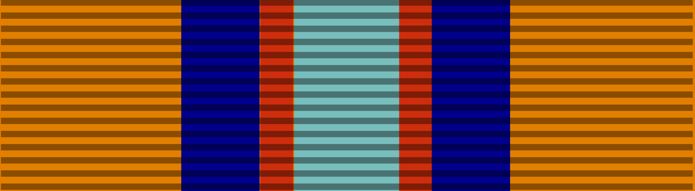
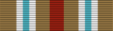
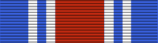
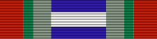

הכרזת העצמאות - 1948
הכרזת העצמאות של מדינת ישראל התקיימה ביום שישי, ה' באייר ה'תש"ח, 14 במאי 1948 בעיר תל אביב, בבית דיזנגוף שבשדרות רוטשילד 16. בטקס, שהתקיים בהתאם להחלטת מנהלת העם כשמונה שעות לפני סיום המנדט הבריטי בהתאם להחלטת החלוקה של עצרת האו"ם מכ"ט בנובמבר 1947, הכריז יושב ראש מנהלת העם דוד בן-גוריון על הקמת מדינת ישראל ונחתמה מגילת העצמאות. מאז חוגגת מדינת ישראל מדי שנה בתאריך עברי זה (או בסמוך לו, על מנת למנוע חילול שבת) את יום העצמאות.
מלחמת העצמאות 1948
הידועה גם בשם "מלחמת השחרור", "מלחמת הקוממיות" או "מלחמת תש"ח". הייתה מלחמה יזומה על ידי מדינות ערב וערביי ארץ ישראל לסיכולה של תוכנית החלוקה ומניעת הקמתה של מדינת ישראל. בסיומה נקבע קו שביתת הנשק המכונה "הקו הירוק". ראש הממשלה ושר הביטחון: דוד בן-גוריון, הרמטכ"ל: יעקב דורי.
מלחמת סיני 1956
הידועה גם בשמה הרשמי "מבצע קדש", הייתה מלחמה יזומה של ישראל, בשיתוף המעצמות האירופיות הממלכה המאוחדת וצרפת, לכיבוש חצי-האי סיני והשתלטות על תעלת סואץ. ראש הממשלה ושר הביטחון: דוד בן-גוריון, הרמטכ"ל: משה דיין.
מלחמת ששת הימים 1967

שבעקבותיה התרחב בכמה מונים השטח שבשליטת מדינת ישראל ("הקו הסגול"): יהודה ושומרון, רמת הגולן וסיני נכבשו מידי ירדן, סוריה ומצרים, בהתאמה. רה"מ: לוי אשכול, שר הביטחון: משה דיין, הרמטכ"ל: יצחק רבין.
מלחמת ההתשה 1970
הייתה מאמץ מצרי בעיקרו לשחוק את רצון הלחימה של כוחות צה"ל בחצי-האי סיני ובתעלת סואץ, ולעורר התנגדות בעורף הישראלי להמשך הכיבוש של סיני - זאת, לא עלה בידי המצרים לעשות. ראש הממשלה: לוי אשכול ואחר כך גולדה מאיר. שר הביטחון: משה דיין. הרמטכ"ל: חיים בר-לב.
מלחמת יום הכיפורים 1973
הידועה בפי הערבים כמלחמת אוקטובר הגדולה או מלחמת הרמאדן, בה ניסו מצרים וסוריה להחזיר לעצמן חלק מהשטחים שאיבדו במלחמת ששת הימים, ובסופה היו בירותיהן מאוימות על ידי כוחות צה"ל. ראש הממשלה: גולדה מאיר. שר הביטחון: משה דיין. הרמטכ"ל: דוד אלעזר (דדו).
מלחמת לבנון הראשונה 1982
או בשמה הרשמי מבצע שלום הגליל; החלה כ"מבצע שלום הגליל", שנועד להרחיק את איומי הקטיושות מלבנון ולסלק ממנה את ארגוני הטרור. ראש הממשלה: מנחם בגין. שר הביטחון: אריאל שרון. הרמטכ"ל: רפאל איתן.
המערכה ברצועת הביטחון 2000
מערכה צבאית שהחלה ב-30 בספטמבר 1982, עם סיום מבצע שלום הגליל, והסתיימה ב-24 במאי 2000, עם יציאת צה"ל מלבנון. במערכה נלחמה ישראל לצד צד"ל בארגונים השיעים אמל וחזבאללה, שנהנו מתמיכת סוריה ואיראן. המערכה הסתיימה עם נסיגת ישראל מרצועת הביטחון. ראש הממשלה: מנחם בגין (בתחילתה), אהוד ברק (בתומה). שר הביטחון: אריאל שרון (בתחילתה), אהוד ברק (בתומה). הרמטכ"ל: רפאל איתן (בתחילתה), שאול מופז (בתומה).
מלחמת לבנון השניה 2006
התחילה כמבצע צבאי מוגבל בתגובה לחטיפת שני חיילי מילואים על ידי חזבאללה, אך בהדרגה התעצמה לעימות רחב יותר. ראש הממשלה: אהוד אולמרט. שר הביטחון: עמיר פרץ. הרמטכ"ל: דני חלוץ.
מלחמת חרבות ברזל 2023
נפתחה בעקבות מתקפת פתע שארגן חמאס, הגוף השולט ברצועת עזה מאז השתלט עליה בשנת 2007. במתקפה נרצחו כ-1,145 ישראלים ונחטפו 250 חטופים לעזה. בתגובה, ישראל תקפה ברצועת עזה בתמיכת ארצות הברית ומדינות נוספות, מול חמאס וארגוני טרור נוספים הנתמכים על ידי איראן וסוריה. ראש הממשלה: בנימין נתניהו. שר הביטחון: יואב גלנט. הרמטכ"ל: הרצי הלוי.